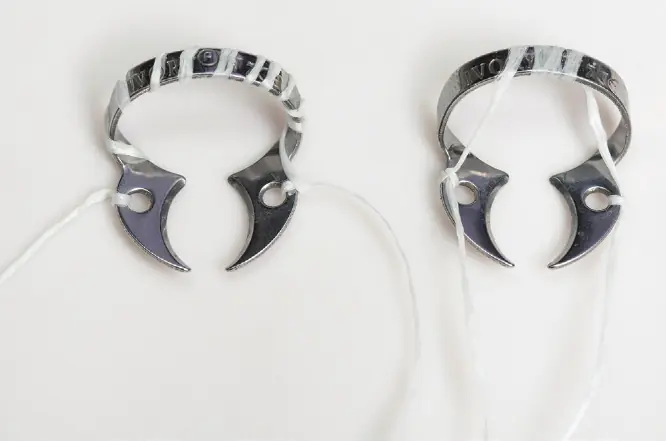
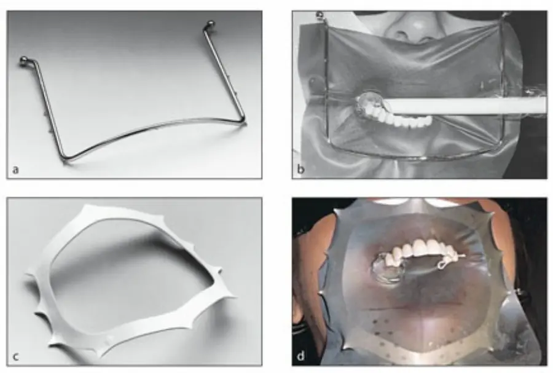

نسخه استخراجشده؛ ترجمه یا تأیید علمی انجام نشده است. وضعیت: captured
هنگام گذاشتن کلمپ روی مولر دوم بالا، کلمپ از نوک فورسپس در میرود و به ته دهان بیمار میافتد. بیمار سرفه میکند و آب دهانش را قورت میدهد. اگر کلمپ نخ ایمنی داشت، چه کاری از دستت برمیآمد؟

پیش از رفتن کلمپ به دهان، یک نخ دندان حدود ۳۰ سانتیمتر به آن ببند. اگر کلمپ یا تکهای از آن بلعیده یا آسپیره شود، با همین نخ بیرونش میکشی.
دو دیدگاه رایج: همه موافقاند که کلمپی که پیش از ورق به دهان میرود نخ ایمنی میخواهد. یک دیدگاه نخ را تا پایان درمان نگه میدارد و به فریم میبندد؛ دیدگاه دیگر پس از جا افتادن ورق آن را میبُرد تا زیر ورق نشت ندهد. کلمپ 212 که پس از ورق گذاشته میشود نخ نمیخواهد. کلمپ بدون نخ را هرگز در دهان رها نکن.
فریم لبههای ورق را بیرون دهان نگه میدارد و بافت نرم را در تمام درمان کنار میزند.

پارچه یا کاغذ جاذبی میان ورق و پوست صورت. بیمار راحتتر است، بزاق گوشههای لب را جذب میکند، مثل بالشتک عمل میکند و هنگام برداشتن رابردم لبها را با آن پاک میکنی. در کار طولانی حتماً بگذار؛ در کودک که رابردم کوتاهمدت است، میتوان نگذاشت.
نکتهی طلایی: ورق را طوری روی فریم بکش که بینی را نپوشاند. بیمار باید راحت از بینی نفس بکشد؛ اگر ورق روی بینی آمده، آن قسمت را تا بزن یا ببُر.